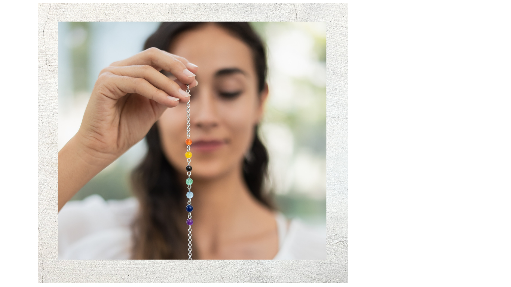
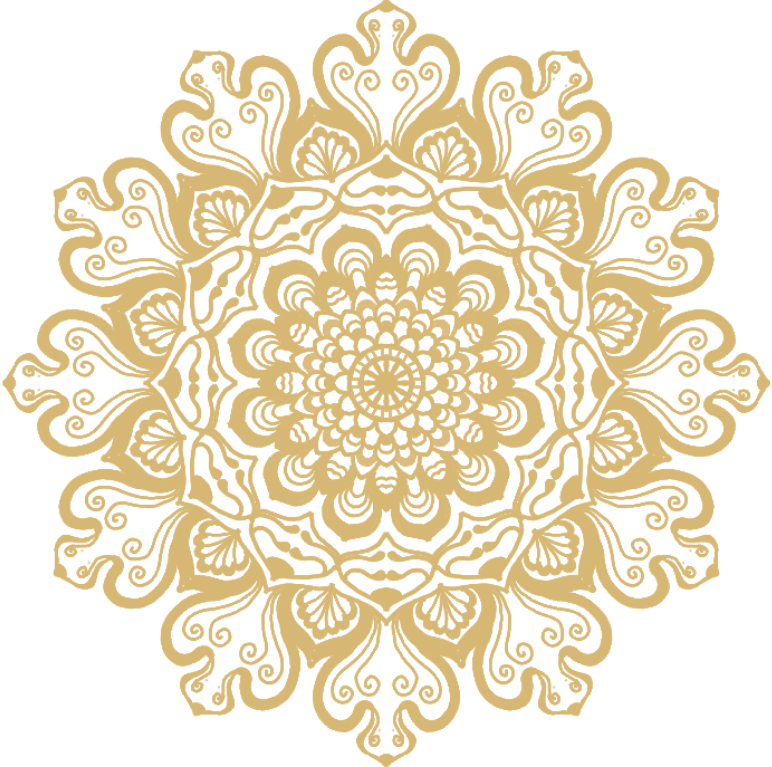

¿NECESITAS MI AYUDA EN ESTE MISMO Instante?
QUI TIENES MI TELÉFONO PARA RESOLVER TODAS TUS DUDAS YA MISMO



Sólo para mayores de 18 años. Los datos que solicitamos son necesarios para hacerte llegar la consulta vía e-mail o SMS sin que suponga coste alguno para ti, así como para informarte de nuestras ofertas y productos complementarios. Este servicio te da acceso a una única consulta gratuita. Le recordamos que se trata de un servicio de entretenimiento y que la empresa no se hace responsable de la exactitud o la interpretación de la respuesta que se le envía. Si deseas una consulta por teléfono, puedes hacerlo en 900.000.000 con las siguientes tarifas: 5€ los 5 primeros minutos, 3€ el minuto adicional.